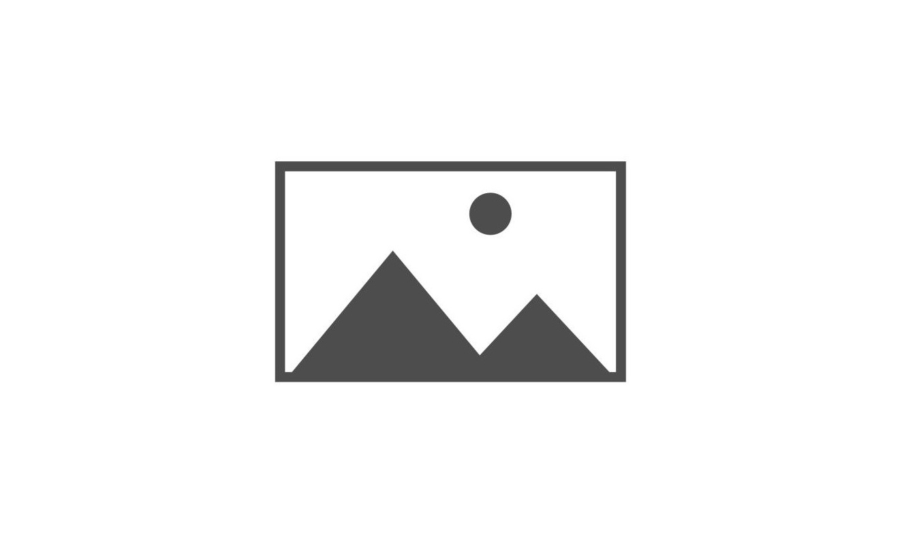

Aurora Auto Commit Message Generator
A VS Code extension that uses local AI models to analyze Git changes and automatically generate commit messages.
Sedan vs SUV Image Classifier
An image classification system that uses a trained deep learning model to distinguish between sedans and SUVs from images.
Web Content Management System
A web-based content management system for creating, managing, and organizing website content through an admin interface.
YAMAS: Yoga Aligntment and Movement Assistance System using Kinect Sensor
A desktop application that uses the Kinect Sensor to analyze yoga movements and provide real-time feedback.

CSS Art
A fun CSS art project that recreates Pikachu using only basic shapes like squares and triangles. Built with HTML and CSS.

Basic Movie Review Site
A simple movie review site with smooth jQuery animations. Built using HTML, CSS, and jQuery.

8 Bit Game
A WPF application that converts integers into 8-bit binary values, designed as a fun interactive game. Built with C# and WPF.

Patient Record Management System
A basic WPF application for managing patient records. Built with C# and WPF.

Pet Shop POS
A WPF-based point-of-sale system designed for pet shops. Built with C#.

Blackjack Game
A simple text-based Blackjack game featuring basic game mechanics like hitting, standing, and dealer AI. Built with C#.

Simple Cipher Encrypt/Decrypt
A console-based encryption and decryption tool that supports basic cipher algorithms for secure text conversion. Built with C#.

Number Converter
A console application that converts numbers into Binary, Octal, and Hexadecimal formats. Built with C#.